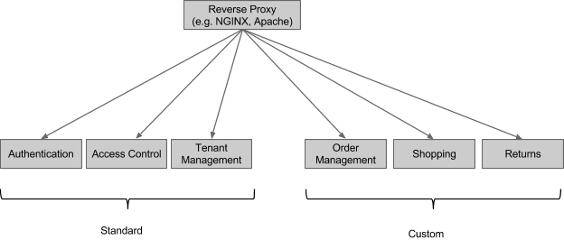
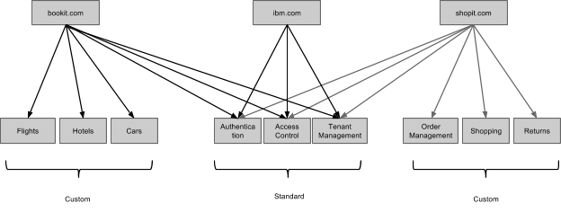
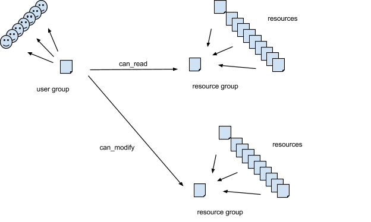

LDA Standard Subsystems
The standard subsystems
Our framework comes with 3 ‘standard’ REST subsystems that provide support for authentication, access control and multi-tenancy respectively. They are interesting because
- They provide capability that is shared across the whole system
- They are subsystems implemented with the frameworks themselves.
If you deployed a system that used the standard subsystems, its logical topology would look like this:

If you were implementing a single shopping site, you might not care about the multi-tenancy subsystem – that one would be most useful if you were trying to implement a competitor to Shopify, BigCommerce or Volution.
Here is another interesting topology that I believe would work fine, even though I have not tested it

In other words, subsystems can be shared across systems, and IBM, or someone else, could host standard subsystems for inclusion in other systems. (I should verify that this works.)
Authentication
The authentication subsystem implements login and logout for the whole system. Our current implementation allows systems to create their own accounts, which are stored in a database. Passwords are stored salted and hashed to meet normal security standards. A fuller implementation of the authentication subsystem would include much more including:
- integration with enterprise LDAP systems
- ability to login via Facebook, Google and other external sites
- for internally-managed accounts, confirmation of new accounts through email and the ability to reset passwords through email
- integration with newer mechanisms like OAuth2 and OpenID
The important thing about the authentication subsystem is that it handles authentication for the whole system, so the other subsystems in the system do almost nothing for authentication. This is true even if the other subsystems are written using diverse languages and frameworks other than our own. This means that future development effort to address the above list only has to be done once. (It remains to be seen how an authentication system like WebID would fir.)
Our authentication subsystem is not designed to replace industry-standard single sign-on systems. All the authentication system does is centralize the authentication handling for the system in one place, so the other subsystems can just implement business-logic and not have to worry about authentication. This only works because all the subsystems are running behind the reverse proxy so their resources are part of the same internet domain (or set of domains in a multi-tenant system). From an authentication point of view, this allows the whole system to run like one big monolithic application, even though it is implemented and deployed as multiple smaller subsystems. Industry-standard single sign-on mechanisms are still needed to integrate the system with others, but only the authentication subsystem has to deal with the technology to do that.
Like every Linked Data application, the authentication subsystem itself is invisible – only the resources that it manages can be seen. Here are the important ones.
/account/login
/account/login is a well-known resource in the sense that its URL can be bookmarked. Our server implementation frameworks know this bookmark, and how and when to use it, so subsystems built with the implementation frameworks don’t need to know it or use it. Server subsystems that are built without our framework need to know this URL – they will delegate to it in challenging users to login.
/account/login is actually a family of resources – there is one in each tenant’s domain in a multi-tenant system.
If a REST subsystem wishes to challenge a user to login in response to a request that asked for HTML format, it returns a 401 response with the following body:
1 2 3 4 5 6 7 8 | |
The browser will execute this script which will land the user in the login UI.
If the original request asked for JSON, rather than HTML, this body will be returned instead:
1
| |
The programmatic client that sent the original request is expected to act appropriately, possibly by taking the user to the login resource’s HTML representation, but perhaps instead by doing a programmatic login.
If the REST subsystem is implemented using our server framework, all this behavior is handled automatically – the subsystem implementations just return the HTTP status code 401 (or 403) and the framework does the rest.
Here is the representation of /account/login in simple JSON format:
1 2 3 4 5 6 7 8 | |
As you can see, the representation includes a link to the ‘registration’ resource which allows you to create a new account either through the UI (if you ask for its HTML representation) or programmatically.
Entering http://lda-example.org/account/login in the address field of a javascript-enabled browser will bring up a traditional login user interface.
The way you login is by POSTing a data structure containing the account_id and password to this same /account/login resource. [If you are a user in the UI, the UI code will do this for you.] Of course, this POST should be done via https.
If a login is successful, a session token is returned to the browser (as a cookie set in the response header) or to the programmatic client (in the body). In the case of the browser client, standard processing is to return the user to the place they were going before they got redirected to login. The session token is in JWT (JSON Web Token) format. Currently it is signed with a hash of a shared secret, but we will probably change that to a public/private key signature to avoid having to distribute shared secrets to subsystems. This is the format of the content portion of the JWT:
1 2 3 4 5 6 7 | |
‘User’ is the URL of the current user (the JWT spec documents a field called ISS that may be intended for this purpose – the spec is hard to interpret). ‘exp’ is the expiry time and is specified in the JWT spec. ‘disp’ is the display name to use – it comes from the nickname or given name for the user recorded in the account. ‘acc’ is the URL of the account and will only be set if the user has logged in. ‘fka’ means ‘formerly known as’ and will be set if the user was assigned a temporary URL prior to login.
If you want to write a subsystem, but you don’t want to use our implementation framework, you need to understand how to delegate to /account/login and how to recognize and verify the JWT session cookie.
As is typical with session tokens, once a session token has been passed out, it is a sensitive property until it expires. By including that session token in requests, a client can access all the resources that the user associated with that session is allowed to access for the duration of the token. This means that if a token is stolen, it can be used maliciously until it expires. Use of https throughout is one way this exposure can be mitigated somewhat, but you still have to trust the clients (e.g. browsers) that hold the tokens not to divulge them. The good news is that tokens cannot realistically be counterfeited without having access to the account subsystem’s private key (which is therefore an even hotter property).
When a server subsystem receives a request with a session cookie, its job is simply to verify the signature and the expiry time and then proceed or reject the request. If the subsystem is implemented with our server framework, this verification is done automatically without the need for subsystem implementation participation.
/account/
Individual accounts are created by POSTing to /account/new. This URL is not normally bookmarked – you can navigate to it from the /account/login resource.
Our system differentiates between users and accounts. Users exist in the real world, but they do have URLs. Accounts represent a single system’s knowledge of a particular user. Accounts have passwords, users have given names and family names. The same user can have many accounts on many systems. Currently we only allow a particular user (as identified by her URL) to have a single account per system, although we could relax that by demanding the password of the first account as part of the establishment of the second. When a resource in the system is created or updated, we record the user who did it, not the account. Similarly, access rights to resources are granted to users, not accounts. Focusing on users rather than accounts allows information to be aggregated across systems – the next level of integration – we consider this important. The terminology here can be confusing because of LDAP’s tradition of using the word ‘user’ for the thing we call an ‘account’. If you doubt that LDAP users are not really users, consider that LDAP users can only have a single password and ask yourself how well that models your life. Once you realize that an LDAP user is really a user’s account on a particular system, things fall into place. Some users – not many – already have a URL to identify themselves, and we allow those users to enter their own URL. Mine is http ://martin-nally.name. (This URL is reachable.) For users who don’t already have an URL of their own, our system will assign one based on the email address given for the account.
In multi-tenant systems, we offer two options for account management. Accounts can be managed centrally for all tenants by the host, or accounts may be managed by tenant. We’re guessing that hosters like the former and tenants prefer the latter
As with all REST subsystems, the account REST subsystem can run anywhere – we have run the account REST subsystem for a system without issues on one cloud while the domain logic for the same system runs on a whole different cloud.
Access Control
There are lots of simple designs for access control that would work to secure resources through the standard HTTP GET, PUT, PATCH, POST, DELETE interface. Slightly harder, but in our opinion necessary, is designing an access control mechanism that can be pushed down into database queries, so that database queries return only the information that the user has the right to see. In this document, we have not yet examined in detail the implementation of containers (collections) that we POST to – we’ll get to that – so for the moment you can take my word for it that it depends heavily on query, and an approach to access control that could not be pushed down into the database would be problematic.
Here is the conceptual model we implement for access control that can be pushed down into queries:

Resources are not secured individually, they are secured in groups. Each resource in the system has a property called ac_resource_group that must be set to the URL of its security group. A subsystem will commonly set the value of this property to point to one of its own resources, but this is not a requirement. A resource’s ac_resource_group property may also be set to point to itself, in which case the resource forms its own group. For many subsystems it is obvious what groups to use. For example, in a bug-tracking system, by default at least, all defects in the same project might have the same access controls. If the bug-tracking system were implemented on our framework, it might set the ac_resource_group for each defect to reference its project. Other subsystems will have different ideas about what the groups should look like. Subsystems can even use URLs of resources outside the system to define resource groups.
The access control subsystem manages resources of type User Group. A User Group lists a set of users, and specifies what rights they have to access and modify [the resources that are members of] specified resource groups.
As always, the interface to the access control subsystem is specified entirely by the resources it exposes.
/ac/n.m
Resources whose URLs are of this form are the User Groups themselves. They are used to define who can access what. They are not normally bookmarked – you would navigate to them from another resource.
User Groups are usually only accessed by the access control subsystem itself – for example through the UI provided to maintain them (this UI has yet to be written unfortunately).
Here is a look at a User Group:
1 2 3 4 5 6 7 8 9 10 11 12 13 14 15 16 17 18 19 20 21 22 23 24 25 26 27 28 29 30 31 32 33 34 | |
User Groups are themselves resources in resource groups secured by other User Groups, so there is actually another property I have omitted above:
1
| |
Even I find this recursive use of resource groups confusing every time I come back to this topic, so I omitted it for clarity, but it is important. This is how you control who can alter particular UserGroups, thereby granting permissions to others.
The value of ac_do is an integer whose bits define what people can do. 63 is all-bits-on, which means they can do everything.
The value of ac_to defines which resource groups the User Group is giving permissions to.
/ac-permissions?resource_group&user
These are the resources used by the subsystems of the system to decide whether an individual GET, POST, PATCH, DELETE operation may be performed. If the subsystem is implemented using our server-side framework, this is done automatically without the programmer needing to do anything (there is an environment variable that controls whether or not access control is to be enforced).
The meaning of each resource in this family of resources is ‘the level of permission that the specified user has to operate on [resources of] the specified resource group’. The representation of these resources is a single integer whose bits represent the granted permissions (read, create, update, delete etc). These resources are bookmarkable and cacheable, and their URLs are usually composed by clients from a known resource_group URL and known user URL. These resources are ‘derived resources’ that contain no original information – they are calculated by database queries over the underlying UserGroups in the access control subsystem implementation. The user URL may be omitted in which case it defaults to the user associated with the current session. The resource_group URL must always be provided in the query string.
These resources are amongst the few we have whose primary usage pattern requires the client to compose a URL from fragments. The reason that we use URL-composition to access these resources is that it is difficult to find a resource we own from which to link to them. You could even argue that this looks a bit like a SOA interface where /ac-permissions is the URL of the SOA method and <resource_group> and
/ac-resource-groups?user
These are the resources used by the subsystems to push access control permissions down into database queries. If the subsystem is performing a query whose selection clause is ‘WHERE x = y’, it should augment the selection clause to be ‘WHERE x = y AND ac_resource_group IN ’, where the list of ac resource groups is found in the representation of one of these resources. If the subsystem is implemented using our server- side framework, this is done automatically without the subsystem programmer needing to do anything. (There is a server environment variable that controls whether or not access control is to be enforced.)
We do not assume relational database technology – other database technologies support selection filters too. Our current implementation is on top of MongoDB.
The meaning of each resource in this family of resources is ‘the collection of resource groups to which the given user has at least read access’. The representation of these resources is a simple array of URLs. These resources are bookmarkable and cacheable, and their URLs are usually composed by clients from a known user URL. The user URL may be omitted in which case it defaults to the user associated with the current session. These resources are ‘derived resources’ that are calculated by database queries over the UserGroups in the access control subsystem implementation.
/ac?resource_group&user
Although they are implemented, I don’t think we have a clear use for these resources currently.
The meaning of each resource in this family of resources is ‘the collection of User Groups that reference the given resource_group and user’. These resources are bookmarkable, and their URLs are expected to be composed by clients from a known resource_group URL and user URL. These resources are calculated by queries in the implementation. The user URL may be omitted, in which case the user from the current session is used. The resource_group may also be omitted in which case all resource specs that reference the user are returned – this is the equivalent of asking what user groups the user is in.
Access Control application availability
When access control is enabled, subsystems have to access the access control subsystem’s resources to process requests. This means that if the access control subsystem is down or unreachable, the whole system stops. It would be interesting to explore how some of the Netflix OSS Hystrix techniques – suitably ported to Python – could be used to improve this situation.
Multi-tenancy
In our definition, multi-tenancy refers to the ability of a single installation of a system of subsystems to manage parallel independent webs of resources, each web belonging to a different HTTP domain. For example, the same installation of shopping-site software might simultaneously support multiple online stores each with its own domain name (e.g. ‘gardendecorations.com’ and ‘webvitamins.com’) and completely different inventory and orders.
Our model for multi-tenancy is analogous to the popular board game ‘Monopoly’. If you are the hoster, you own the entire board and the bank. Atlantic City, New Jersey, is credited with being the original Monopoly variation, so lets assume the hoster’s domain is http://acnj.com. Players buy properties on the hoster’s board. In our current code, properties are called ‘sites’. In a slight departure from the Monopoly model, customers in our game get to name their own sites. Each site corresponds to an internet domain name. Let’s assume I create the site ‘boardwalk’ at http://acnj.com. Our framework will allocate http://boardwalk.acnj.com to the new site, although we assume it is likely that the customer will also buy http://boardwalk.com from an internet registrar and use that domain in preference. [Bringing your own domain name like this isn’t implemented yet in our code – it is on our to-do list.] Once they own a site, customers can put improvements on it. In the board game as I remember it, there are only two types of improvement you can add – houses and hotels. In our hosting game, the sorts of improvements you can add are more varied, depending on the software that a hoster has installed. Examples might be:
- online stores
- blogs
- online banks
- online travel agencies
- … anything else you have written subsystems to support
These different ‘types’ of improvements are called capabilities in our framework. A capability is really just an installed subsystem that has been flagged as representing tenant-meaningful function. Capabilities are installed centrally on the board at the bank and are visible to all sites. As in the board game, you can put multiple improvements of the same type on the same site – whether you add a second online store to an existing site or put it on a new site is really a branding issue for the customer. For example, some retailers like to keep their discount store under the same brand (e.g. http://rei.com and http://rei.com/outlet) while others prefer to keep separate store brands for different price-points (e.g. Macy’s and Bloomingdale’s).
When a subsystem is running in our framework, it will get both a tenant id and a capability id with each HTTP request. In the current code, if the incoming URL is http://boardwalk.acnj.com/shop/2.3, then the capability id is ‘shop’ and the tenant id is ‘boardwalk’. Our default implementation will create a separate MongoDB collection for each tenant/capability pair. If there are multiple shops on the same site, they will share a single MongoDB collection for storage – the different shops are kept apart by linkages in the resources. Everything to do with a shop – it’s orders, catalogs, products, etc. will go into the same ‘shop’ collection (unless they are implemented by a different capability). Different sites never share storage collections, so it is unlikely that we would ever accidentally give one tenant’s data to another. It is possible for two different types of improvement on the same site to share a collection, and even to share resources, although this is not the default behavior.
The multi-tenancy subsystem allows customers to create and manage their sites and to add improvements. The management of a particular improvement – for example a store, its products, orders, inventory etc. – is done through the capability that created it, not by the multi-tenancy app.